Module 3 · If I am an Employee
Self-regulation:
the foundation and what to do
in the moment
Part A – I am going through a difficult time. What helps to keep your balance day to day, and simple techniques to reduce activation in moments of stress, anxiety or overload.
Foundation of self-regulation
What helps me keep my balance
Before turning to immediate strategies to cope with stress or anxiety, it is important to have a consistent regulation foundation in place. Looking after this foundation does not remove difficulties, but it helps you deal with them more effectively. 0 of 4 seen
Physiological needs
Emotional balance starts in the body. Deficits in rest, food or hydration have a direct impact on how you think, feel and react.
- Sleep: keeping a regular, restorative sleep pattern is essential for emotional and cognitive regulation.
- Food and hydration: eating a balanced diet and staying well hydrated contribute to steady energy and less reactivity.
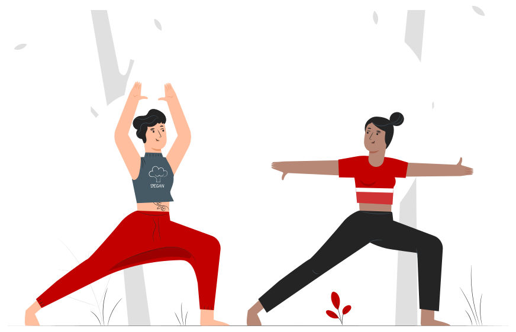
Regulation through relationships
Connection with other people is one of the main regulators of the emotional system.
- Cultivating relationships of trust and closeness
- Sharing experiences or concerns with people who feel safe
- Allowing yourself to receive support, even if only occasionally
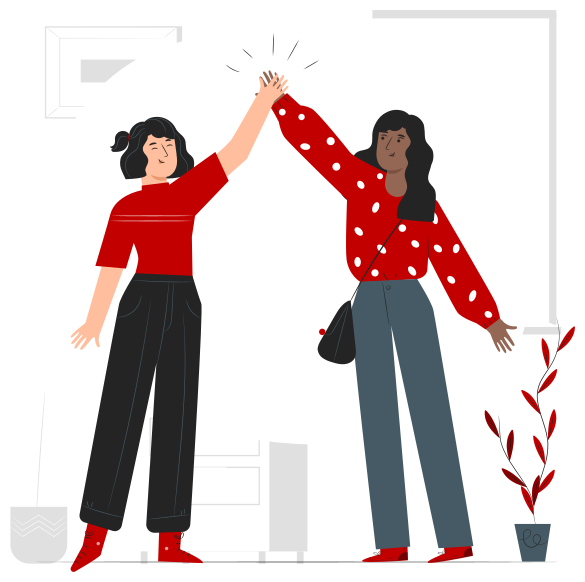
Structure and predictability
In stressful contexts, predictability helps reduce the feeling of inner disorganisation.
- Keeping consistent routines and schedules
- Keeping up everyday activities, even when you have less energy
- Avoiding abrupt changes that increase instability
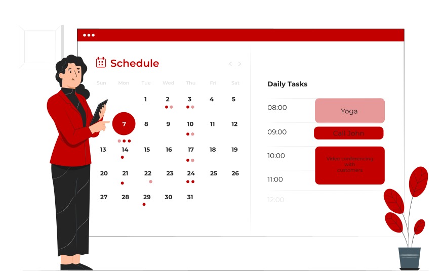
Managing demands and limits
How you manage your internal and external demands directly influences your level of overload.
- Adjusting expectations to the current moment
- Prioritising essential tasks
- Recognising limits and avoiding an unsustainable pace
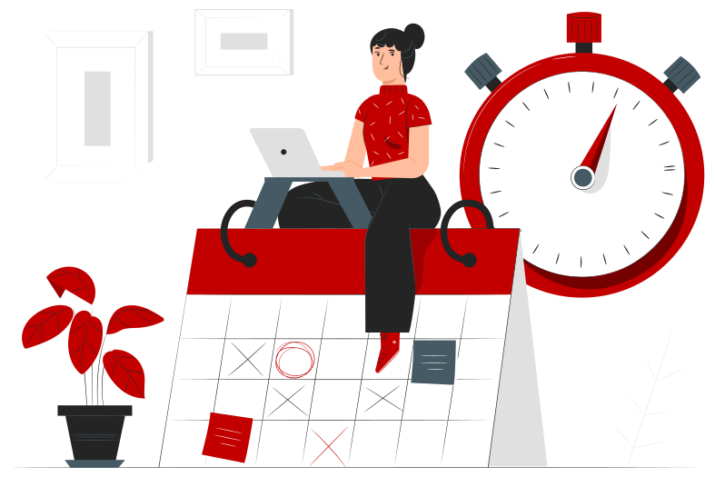
Foundation of self-regulation
Self-regulation does not start with techniques. It starts with the foundations.
When the body, relationships and structure are compromised, any strategy will have less effect.
- Body
- Relationships
- Structure
Immediate self-regulation strategies
What to do in the moment
In situations of intense stress, anxiety or overload, the focus is not to solve the problem straight away, but to reduce activation and regain enough clarity to respond with greater control.
You do not have to apply every strategy. Often, a single technique practised for a few minutes is enough to reduce the intensity of the moment. If it does not work the first time, you can try another or repeat it.
Three groups of strategies · click on one to go straight to it
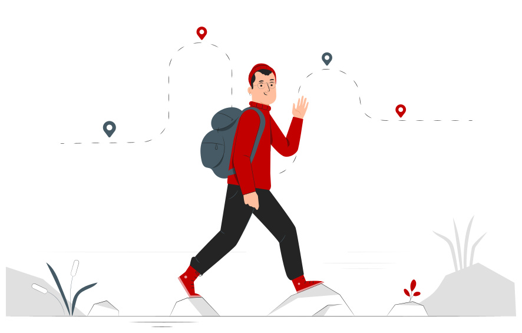
a · Stop and reduce activation
Mindful pause (micro-pause)
- 1Stop what you are doing for 1–3 minutes.
- 2If possible, physically move away from the situation (e.g. leave your desk, go to the bathroom, look out of the window).
The aim
It is not to think about the situation, but to create a space between you and the trigger.
CC Captions not available in this demo version.
a · Video
Controlled breathing
The step-by-step video for this exercise is not yet available in this version.
- Sit with your feet flat on the floor or take a comfortable position.
- Concentrate on the out-breath – the longer it is, the greater the calming effect.
- If it helps, follow the sequence – “breathe in, hold, breathe out” – in your mind or in a low voice.
a · Guided exercise
Breathe with the circle
Click on “Start” and repeat for 1–2 minutes. You can stop whenever you like.
- Breathe in through your nose4 seconds
- Hold your breath2–3 seconds
- Breathe out slowly through your mouth5–6 seconds
CC Captions not available in this demo version.
a · Video
5-4-3-2-1 Grounding
The aim is to bring your attention to the present and get out of the cycle of thoughts.
The step-by-step video for this exercise is not yet available in this version.
a · Guided exercise
Look around you and identify
Do the exercise now and click on each step as you complete it. 0 of 5 done
If you cannot identify one of the senses (e.g. smell), you can skip it.
CC Captions not available in this demo version.
a · Video
STOP strategy
Use this sequence in your head or quietly out loud. The video for this technique is not yet available in this version.
- SStopStop what you are doing.
- TTake a breathTake 1–2 cycles of slow breathing.
- OObserveNotice what you are feeling (emotions, thoughts, body).
- PPerspectiveAsk yourself “what is really happening?” or “is there another way of seeing this?”
- PProceedConsciously choose the next step (even a small one).
b · Refocus and organise
Refocus and organise
Click on each of the three strategies. 0 of 3 seen
Simple focused attention
Direct your attention to a neutral element (e.g. an object) and mentally describe all its details for 30–60 seconds.
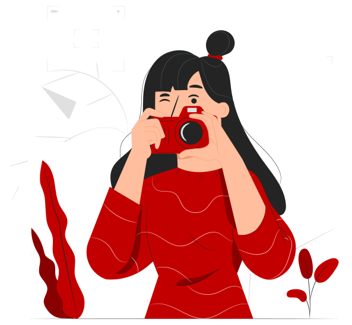
Mindfulness: observing without judging
Observe and name what you are feeling (“I’m anxious”, “I’m tense”, “this is frustration”) without trying to change it. The aim is to create distance from the experience.
If you are curious: there are several free mindfulness and meditation apps available, just search in your phone’s app store or on YouTube. Start with just 5 minutes a day – consistency matters more than duration.
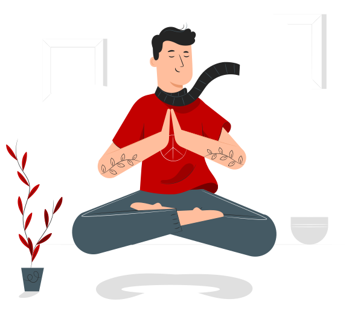
Externalising worries
Write down – or sort out in your head – what worries you, what is under your control and what is not. This helps reduce overload.
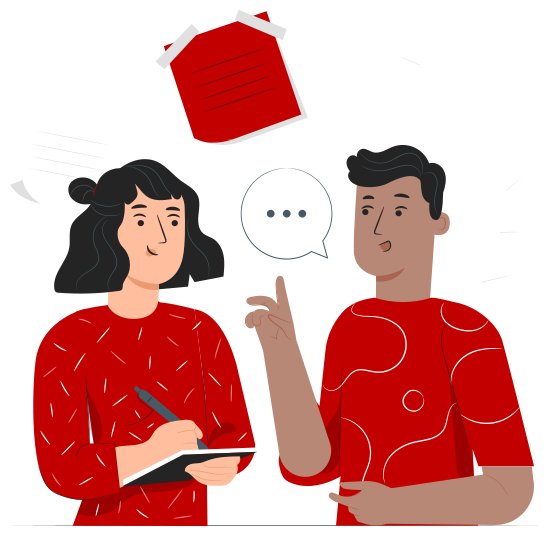
c · Regulate and reconnect
Regulate and reconnect
Click on each of the three strategies. 0 of 3 seen
Light physical activity
Move for 2–5 minutes (walk, stretch, change position) to release physical tension.
If you prefer something more structured, you can try tensing and relaxing muscle groups (e.g. hands, arms, legs), focusing on the difference between tension and relaxation.
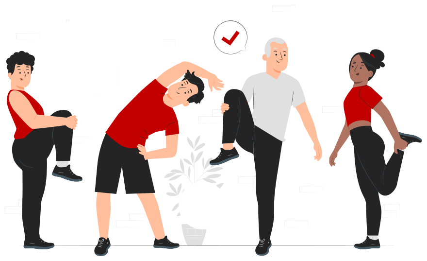
Self-regulation through touch
When you are stressed or anxious, you can use physical contact with yourself to help your body calm down. Try one of these options:
- Place one hand on your chest and the other on your belly. Feel the movement of your breathing for a few cycles, without trying to change it.
- Hold your own hands. Press lightly, as if you were comforting another person.
- Cross your arms and hold your shoulders or arms. Apply gentle pressure and hold for a few seconds.
- Press your feet against the floor. Focus on the feeling of contact and stability.
Hold this position for about 30 seconds to 1 minute.
Sharing and normalising
If it feels right, talk to someone you trust. You do not have to explain everything; sharing helps reduce isolation and make sense of the experience.
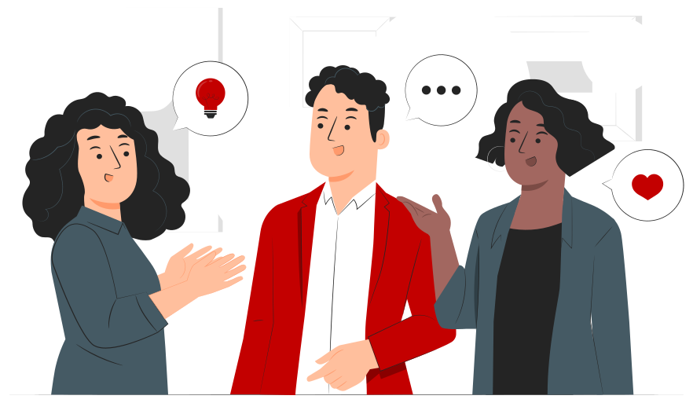
CC Captions not available in this demo version.
c · Video
Self-regulation through touch
Four ways of using physical contact with yourself to help your body calm down.
Flowchart 2
Quick Action
Click on your answer to each question to work through the flowchart, or click on “Play the conversation”.
Your route
- 1Stress, anxiety or overload?
- 2Can I step away?
- 3What do I need most?
- 4Do I feel calmer now?
- ✓Resume
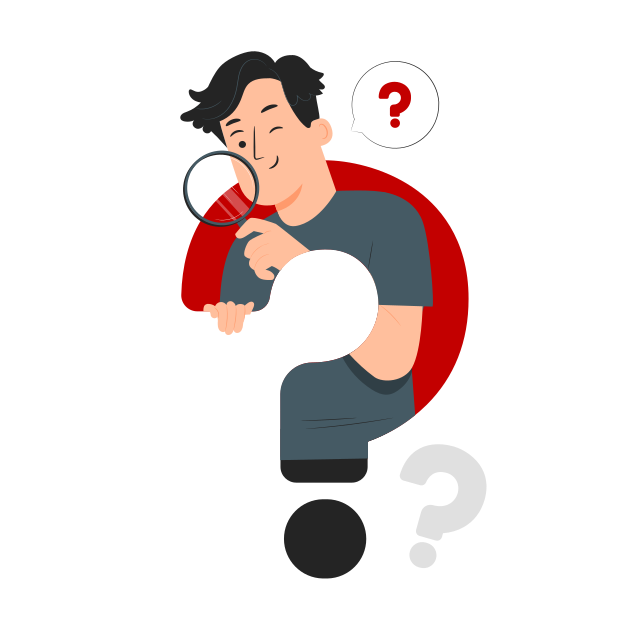
“After the moment” checklist
Small adjustments increase effectiveness over time
After using a strategy, it can be useful to reflect:
- What was I feeling at the start?
- What helped most?
- What can I do differently next time?
- Do I feel stress, anxiety or overload? Can I step away from where I am for a few minutes? If so, I take a micro-break; if not, I use a strategy on the spot (controlled breathing, 5-4-3-2-1 grounding or STOP).
- Is my body still very activated? If so: mindfulness, attentional focus or light physical activation.
- If not, I notice what is most present. Racing or repetitive thoughts: STOP, putting worries outside myself or attentional focus. Physical tension: light physical activation or muscle relaxation. Emotional overload or isolation: touch, talking to someone I trust or normalising the experience.
- Do I already feel calmer or more in control? If so, I go back to a simple task (one small, concrete step). If not, I choose another strategy or repeat the earlier ones, look at Module 6 and seek help.
In moments of greater activation, it is normal to feel a loss of control, urgency or confusion. These strategies do not remove the problem straight away, but they help you regain enough stability to respond instead of reacting. Starting small is enough.